하늘이 정한 길을
천명당이 밝힙니다
사주팔자 · 관상 · 손금 · 타로카드 · 풍수지리
동양 철학의 정수를 한곳에서 체험하세요
오늘의 운
WHY 천명당
왜 천명당인가
사주 8글자 — 일주/월주·시주·년주 + 대운·세운·월운 + 직업·재물·연애·건강을 한 리포트로.
결제 후 즉시 이메일로 발송. 24시간 기다림 없이 결과를 바로 확인하실 수 있습니다.
결과를 받아보시고 만족하지 않으시면 24시간 안에 전액 환불해드립니다.
사주 · 관상 · 손금 · 타로카드 · 꿈해몽 · 별자리 · 풍수 · 오늘의 운세 — 전부 무료로 먼저 체험.
✦ FREE ✦
무료 사주팔자 분석
생년월일과 태어난 시간을 입력하면 사주팔자를 즉시 분석해 드립니다
✦ COMPATIBILITY ✦
궁합 분석
두 사람의 사주를 비교하여 오행 궁합을 분석합니다
첫 번째 사람
두 번째 사람
광고 수익으로 무료 서비스를 운영합니다 · 행운패스 받기 (24시간 광고 OFF)
✦ FACE READING ✦
관상 분석
셀카 한 장으로 AI가 이목구비를 분석하여 관상학적 해석을 알려드립니다
✦ FENG SHUI ✦
풍수지리 가이드
집의 방향과 고민 분야를 선택하면 맞춤 풍수 조언을 드립니다
✦ PALMISTRY ✦
✋ 손금 분석
10가지 질문으로 나의 손금 유형을 진단해 보세요
손금 자가진단 테스트
10개의 간단한 질문으로 당신의 손금 유형을 진단합니다.
종합운, 재물운, 연애운, 건강운, 직업운까지 한번에!
✦ FREE ✦
🃏 타로카드
카드를 선택하여 숨겨진 운명의 메시지를 확인하세요
광고 수익으로 무료 서비스를 운영합니다 · 행운패스 받기 (24시간 광고 OFF)
✦ FREE ✦
🌅 오늘의 운세
생년월일을 입력하면 오늘의 운세를 확인할 수 있습니다
광고 수익으로 무료 서비스를 운영합니다 · 행운패스 받기 (24시간 광고 OFF)
✦ FREE ✦
⭐ 별자리 운세
나의 별자리를 선택하면 오늘의 별자리 운세를 확인할 수 있습니다
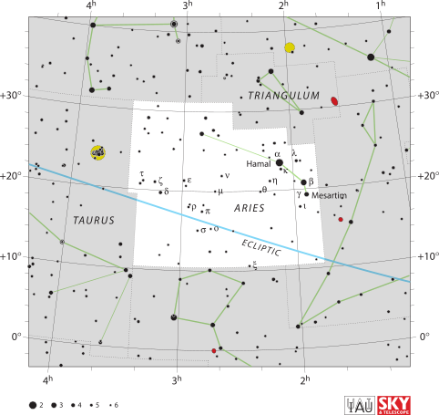
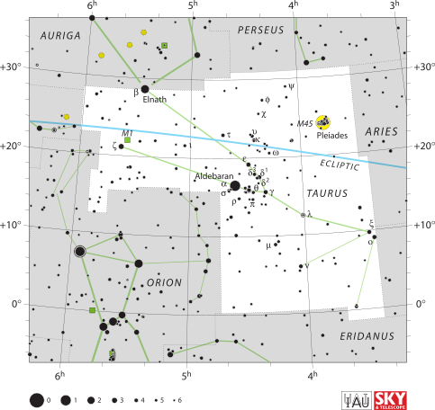
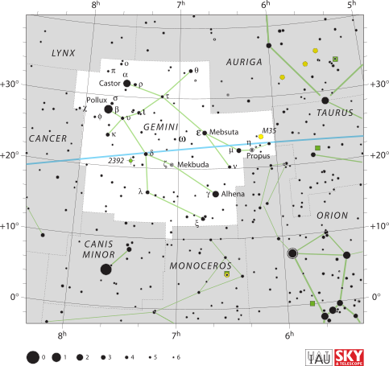
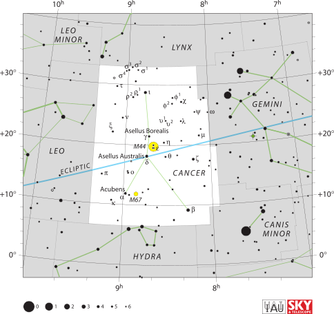
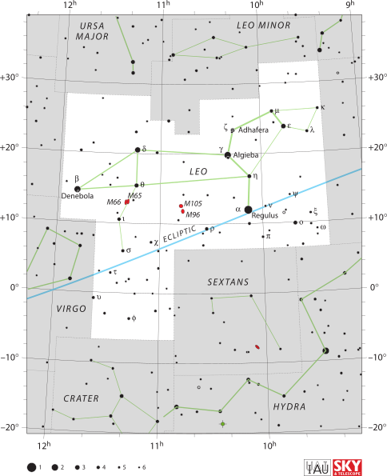
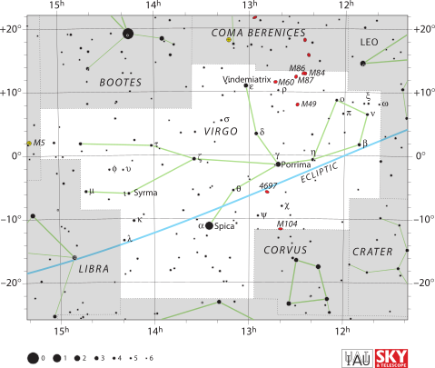
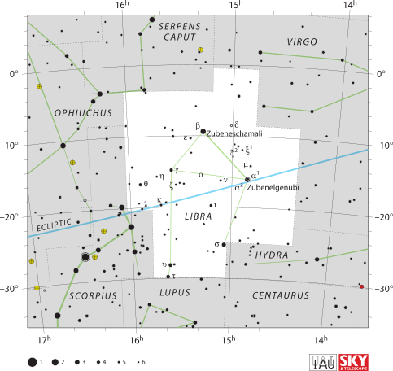
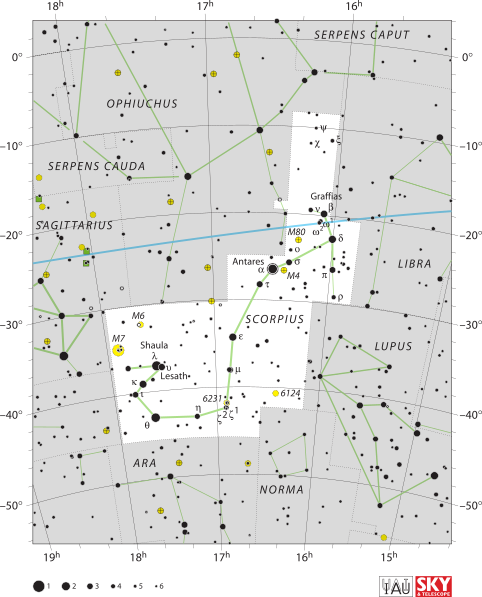
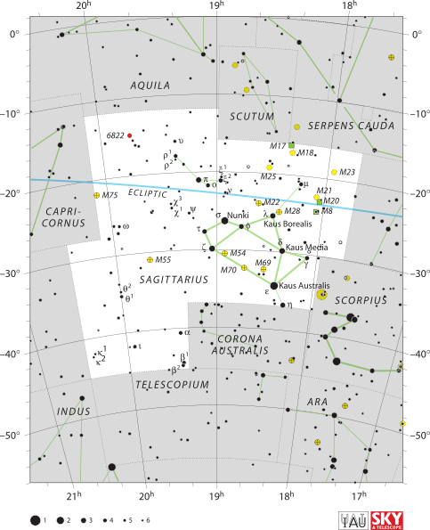
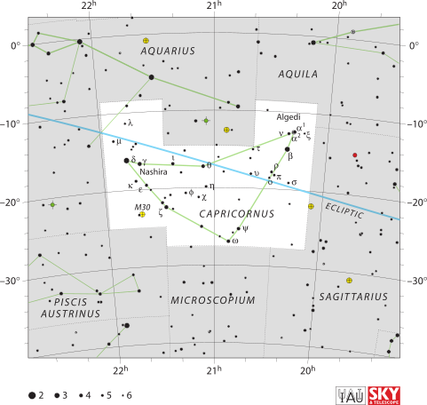
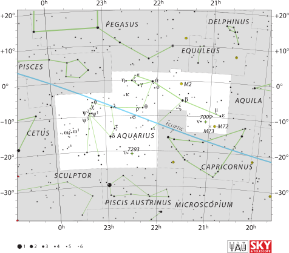
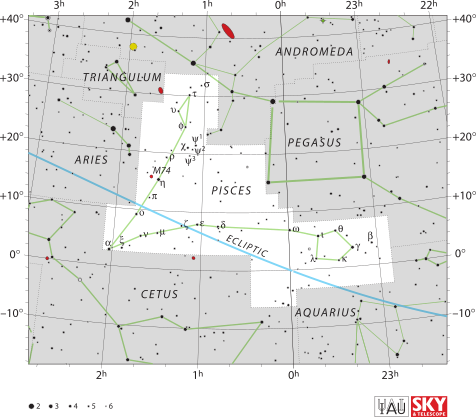
광고 수익으로 무료 서비스를 운영합니다 · 행운패스 받기 (24시간 광고 OFF)
✦ FREE ✦
띠별 오늘 운세
자(쥐)·축(소)·인(호랑이) ··· 십이지 12띠 — 본인 띠를 눌러보세요
광고 수익으로 무료 서비스를 운영합니다 · 행운패스 받기 (24시간 광고 OFF)
✦ FREE ✦
꿈해몽
어떤 꿈을 꾸셨나요? 자유롭게 입력하시면 해석해 드립니다
어젯밤 꾸신 꿈을 자유롭게 적어주세요.
예: "뱀이 나를 쫓아오는 꿈", "이빨이 빠지는 꿈", "돈 줍는 꿈"
광고 수익으로 무료 서비스를 운영합니다 · 행운패스 받기 (24시간 광고 OFF)
✦ PREMIUM SERVICES ✦
천명당 사주 심층 풀이
당신의 사주 8글자를 A4 5장 분량으로 정밀하게 풀어드립니다 (즉시 발송).
※ 천명당의 모든 풀이는 사주명리 데이터 기반 자동 풀이 시스템으로 생성됩니다. 참고용이며, 중요한 결정은 전문가와 상담하시길 권합니다.
10년 단위 대운 흐름
직업·재물·연애·건강 종합 분석
올해 운세 + 다음해 전망
행운의 색·방향·숫자
연애/결혼 궁합 점수
갈등 가능성 + 해결책
행운의 데이트 코스
재물·연애·건강 예측
길일·흉일 캘린더
새해 다짐 가이드
궁합 분석 (9,900원 가치)
신년 12개월 운세 (15,000원 가치)
통합 심층 리포트
결과창 가리는 광고 0개
광고 게이트 카운트다운 0초
다른 기기 복원 가능 (이메일만)
환불·해지 무관 영구 사용
월 29,900원 — 모든 사주 풀이 무제한
광고 NO 정책· 회원가입 후3일 무료 체험
구독료 29,900원이100% 환급됩니다.
카톡 채널만 구독 (기본)
매일 아침 7시 카톡 운세만 받기
결제가 완료되었습니다!
지금 바로 이 화면에서분석 결과를 확인하실 수 있습니다.
이메일로도 동일한 리포트가 백업 발송됩니다.
✦ CUSTOMER COMPLAINT CENTER ✦
고객 불만접수센터
불편한 점이 있으시면 말씀해 주세요. 빠르게 개선하겠습니다.
접수되었습니다
소중한 의견 감사합니다. 개선에 반영하겠습니다.
💬 자주 묻는 질문
결제 후 24시간 이내 결과 미수령 시 전액 환불 가능합니다. 이메일로 문의해주세요.
사주 분석은 전통 명리학에 기반한 참고용 해석입니다. 상세 분석을 원하시면 유료 서비스를 이용해주세요.
사진은 서버에 저장하지 않으며, 입력된 생년월일은 브라우저에서만 처리됩니다.
🌐 Global Digital Products (English) — 20 PDFs
AI productivity · Solo entrepreneur · Mindfulness · Korean culture & lifestyle — printable PDFs for global audience
⚡ Global Mass Market
🇰🇷 Korean Culture Series (15 PDFs)
PayPal global · Toss Korea · Instant PDF download · More on K-Saju AI · K-Wisdom Daily